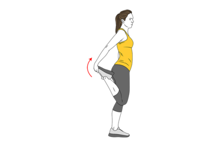
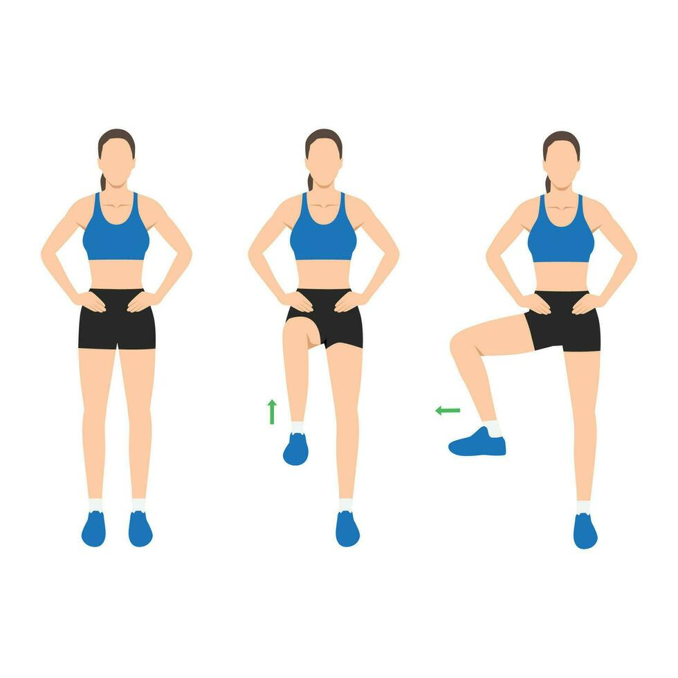
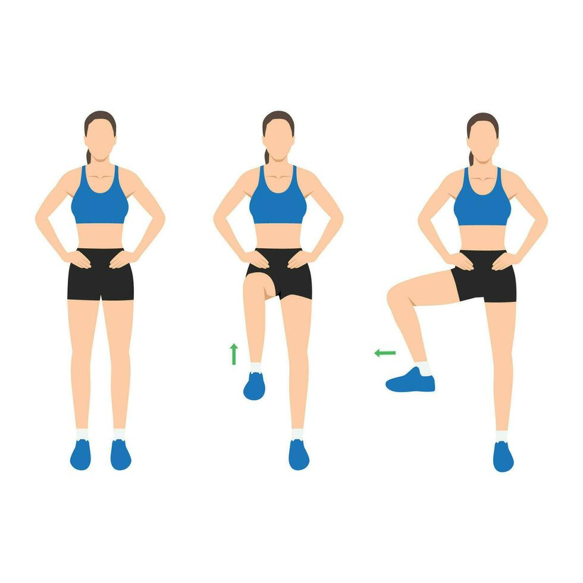
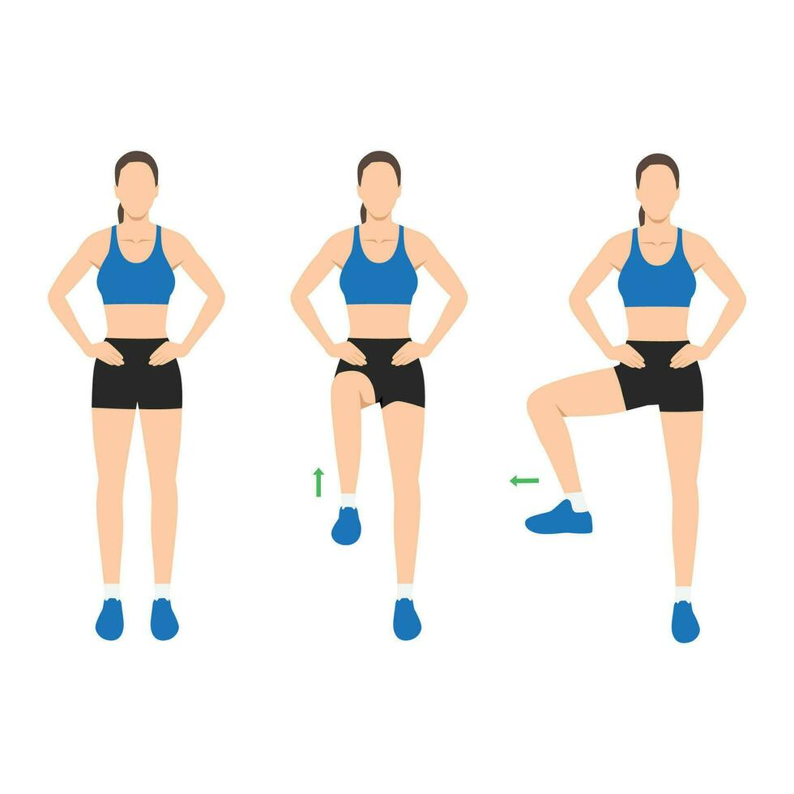

Ejercicios de Flexibilidad y Movilidad
La flexibilidad y la movilidad son esenciales para prevenir lesiones y mejorar el rendimiento deportivo.
Ejercicios recomendados:
- Estiramiento de cuádriceps
- Flexión hacia adelante para la espalda baja
- Rotación de cadera
- Postura del perro boca abajo (yoga)
- Movilidad de hombros

 


Volver al Inicio